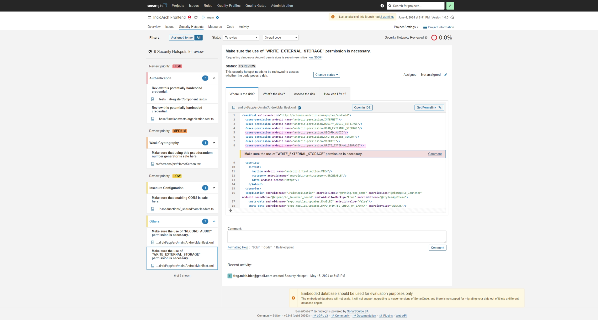

Incid-Arch die smarte Lösung der Unfallbericht Protokollierung
Created by Nick Obreiter, Felix Blank, Alexander Geier and Cristiano Gomes
Vision
Befreien Sie sich von der Last handschriftlich ausgefüllter Unfallberichte und dem Chaos von Papierstapeln mit schwer entzifferbaren Vorfällen. Digitale Unfallprotokolle sind nicht nur auf dem Vormarsch – sie sind bereits hier und erleichtern Ihren Alltag erheblich. Erfüllen Sie Ihre Dokumentationspflicht nach DGUV § 24 Abs. 6 einfach, sicher und digital. Alle Daten werden nach DSGVO ausschließlich in Europa verarbeitet und gespeichert. Schluss mit dem lästigen Papierkram und herzlich willkommen zu einer effizienteren, modernen und rechtlich konformen Lösung
App-Ansprüche
Was soll die App mitbringen ?
| Ziele | Status |
|---|---|
| Konto (Organisations) Erstellung | ✅ |
| Einloggen | ✅ |
| Ausloggen | ✅ |
| Erstellen eines neuen Vorfalls | üÜó |
| Bearbeiten eines Vorfalls | ❌ |
| Ziele | Status |
|---|---|
| User Dashboard für Vorfälle | ✅ |
| Generieren von Berichten | ❌ |
| Datensicherheit | ✅ |
| Verwalten von Benutzerrollen und Rechten | ❌ |
| Benachrichtigungen | ❌ |
| Benutzerfreundlichkeit | ✅ |
Wie Startet man so eine Reise ?
Planung vielleicht ?
Aber was brauchen wir nun alles ? Ein Keks vielleicht ?.
Mit ner menge FANTASIE

Projektmanagement
Definition
- Planung
- Überwachung
- Steuerung
- Abschluss
Projektphasen
- Initiierung
- Planung
- Durchführung
- Überwachung und Steuerung
- Abschluss
Projektziele
- Spezifisch
- Messbar
- Ereichbar
- Realistisch
- Terminiert
Rollen im Projekt
- Projektteam:
- Felix: Backend, Frontend
- Nick: Frontend, Backend
- Alex: Qualitätssicherung, Projektplanung
- Cristiano: Qualitätssicherung, Frontend
- Stakeholder: Daniel Warzel
Werkzeuge
- Jira
- Git
- Github (Actions)
- Discord
- Supabase Tools
- VS-Code / Web-Storm
Task Board
- Anfangs: GitHub
- Später: Jira
- Aufgabenplanung
- Statusverfolgung
- Teamkoordination
Kommunikation
- Regelmeetings (Discord)
- IRL Gespräche
- Feedback
Meetings
- Wöchentliches Teammeeting:
- Wochenends (Samstags, 20:00 ~ 21:00 Uhr)
- Planungsmeeting:
- Jeden Mittwoch, 15:00 - 17:00 Uhr
Erfolgsfaktoren
- Strukturierte & informierte Planung
- Sprints definieren, diskutieren, abgrenzen.
- Pointierte & Atomare Arbeitspakete
- Transparente Kommunikation
- Flexible Arbeitszeiten, Pensum gerecht.
- Kontinuierliche Wertschätzung der Arbeit.

Architektur
Code Style Patterns
| Entscheidung | Begründung |
|---|---|
| ATOMIC | Übersichtliche DX und Best Practices |
| MVP | Lose Kopplung des Backends |
| SOLID | Lesbarkeit des Codes |
Best Practice Implementierung
| Entscheidung | Begründung |
|---|---|
| Stateless Components & Stores | Wiederverwendung durch Cache und unifizierte Datenbankanbindung |
| Row Level Secruity Policies | Blacklist Basis |
UML Diagramm

Technologie-Stack
| Name | Art |
|---|---|
| React Native | Framework |
| EXPO | Framework |
| Type-Script | Programmiersprache (JS) |
| PostgreSQL | DBMS |
| DENO | Supabase-Edgefunctions |
| Name | Art |
|---|---|
| SonarQube | Statische Codeanalyse |
| Jest | Unit-Test |
| Bash | Scriptsprache |
| EXPO-Go | App-Test Umgebung |
| Supabase | Backend as a Service |
Qualitätssicherung
Ziele der Qualitätssicherung
- Erfüllung von Anforderungen
- Einhaltung von Qualitätsstandards
- Gewährleistung der Zuverlässigkeit und Sicherheit
Verwendung von
Jest und Mocks
- Jest für JavaScript/Type-Script -Tests
- Umfassende Tests für Funktionen oder Komponenten
- Verwendung von Mocks für externe Abhängigkeiten
- Isolierte Tests ohne tatsächlichen Zugriff auf Abhängigkeiten
Qualitätsstandards
- Leistung
- Zuverlässigkeit
- Sicherheit
- Benutzerfreundlichkeit
Teststrategie
- Unit Tests ✅
- End-to-End-Tests✅
- Performance-Tests❌
- Security-Tests üÜó
Kontinuierliche Integration
- Automatisierte Tests❌
- Build und Deployment✅
- Code Reviews✅
Qualitätskontrolle
SonarQube
SonarQube: High Security ♨️
SonarQube: Medium Security üçä
SonarQube: Low Security üÜó
SonarQube: 2. Low Security üÜó
Statistiken

Stundenverteilung

Builds
CI/CD

GitHub Actions
- Automatisierung
- Tests und Builds
- Integriert in GitHub
Expo Application Services (EAS)
- Cloud-basierte Builds
- Veröffentlichung
- Plattformübergreifend
Workflow Erstllung

Workflow-Übersicht
Verlauf und Status aller Builds

Run-Zusammenfassung
Details zu einem Run

Releases
Gebaute Artefakte und Versionen

Vorteile von CI/CD
- Schnellere Iterationen
- Frühe Fehlererkennung
- Kontinuierliche Auslieferung
Live Demo
Was wir gelernt haben?

Arbeitspakete sind bestmöglich auf atomare Teile/ Sub-Issues herunterzubrechen.
Planung & Organisation,
bestmöglich durch eine oder wenige Personen im Kern.
Verpflichtende jour-fixe.
Dokumentierte Kommunikation
(Protokollführung).
Direktes Ansprechen wenn Aufgaben oder Pensum nicht erfüllt werden können.
Dokumentation zugänglicher machen und aktuell halten, damit möglichst viele Einstiegspunkte in den Kontext eines Features geschaffen werden.
Mehr ... Struktur, Verbesserungs-Zyklen (Sprints), Rücksicht auf individuelle Verhaltensweisen,
Disziplin, frühzeitige Unterstützung
& gemeinsames Einstimmen (Zeit).
FIN
..dsch ned Witzig?